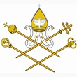

|
 |
 |

The Armenian Catholic ChurchThe Latin Crusaders established close contacts with the Armenian Apostolic Church in the 12th century when they passed through the Armenian kingdom in Cilicia on their way to the Holy Land. An alliance between the Crusaders and the Armenian King contributed to the establishment of a union between the two churches in Cilicia in 1198. This union, which was not accepted by Armenians outside Cilicia, ended with the conquest of the Armenian kingdom by the Tatars in 1375.
A decree of reunion with the Armenian Apostolic Church, Exultate Deo, was published at the Council of Florence on November 22, 1439. Although it had no immediate results, the document provided the doctrinal basis for the establishment of an Armenian Catholic church much later.
Catholic missionary activity among the Armenians had begun early, led initially by the Friars of Union, a now-defunct Armenian community related to the Dominicans, founded in 1320. With the passage of time, scattered but growing Armenian Catholic communities began to ask for a proper ecclesial structure and their own patriarch. In 1742 Pope Benedict XIV confirmed a former Armenian Apostolic bishop, Abraham Ardzivian (1679-1749), as Patriarch of Cilicia of the Armenians, based in Lebanon, and with religious authority over the Armenian Catholics in the southern provinces of the Ottoman Empire. In the north, they continued to be under the spiritual care of the Latin Vicar Apostolic in Constantinople. The new patriarch took the name Abraham Pierre I, and all his successors have likewise taken the name Pierre in their ecclesiastical title.
The Ottoman millet system, which provided for the administrative autonomy of minorities under the direction of their religious leaders, had placed all Armenian Catholics under the civil jurisdiction of the Armenian Apostolic Patriarch in Constantinople. This resulted in serious difficulties and even persecution of Armenian Catholics until 1829 when, under French pressure, the Ottoman government gave them the right to be organized civilly as a separate millet, with an Archbishop of their own in Constantinople. In 1846 he was vested with civil authority as well. The anomaly of having an Archbishop with both civil and religious authority in the Ottoman capital and an exclusively spiritual Patriarch in Lebanon was resolved in 1867 when Pope Pius IX united the two sees and moved the patriarchal residence to Constantinople.
The vicious persecution of Armenians in Turkey at the end of World War I decimated the Armenian Catholic community in that country: seven bishops, 130 priests, 47 nuns and as many as 100,000 faithful died. Since the community in Turkey had been drastically reduced in size, an Armenian Catholic synod in Rome in 1928 decided to transfer the Patriarchate back to Lebanon (Beirut), and to make Constantinople (now Istanbul) an Archdiocese.
There were also a number of Armenian Catholic communities in the section of historic Armenia that came under Russian control in 1828. Pius IX established the diocese of Artvin for all Armenian Catholics in the Russian Empire in 1850. But tsarist opposition to eastern Catholicism resulted in the abandonment of the Artvin diocese within 40 years. In 1912 the Armenian Catholics in the Empire were placed under the Latin bishop of distant Tiraspol. The Armenian Catholic Church was entirely suppressed under communism, and it was only with the independence of Armenia in 1991 that communities of Armenian Catholics began to resurface. On July 13, 1991, the Holy See established an Ordinariat for Armenian Catholics in Eastern Europe based in Gyumri, Armenia.
The only Armenian Catholic monastic order is the Mechitarist Fathers, founded in Constantinople by the monk Mechitar in 1701. The growing community established itself on the island of San Lazzaro, near Venice, in 1717. In 1773 a group of the monks set up a separate community in Trieste which transferred to Vienna in 1811. These two communities long served the entire Armenian nation through their scholarship and publishing activity both in Europe and the Middle East. In 2000 the two groups re-united into a single congregation based in Venice. It now has 27 members.
The Patriarchal Congregation of Bzommar, Lebanon, was founded in 1750, originally as a community of bishops and priests that included the Patriarch and his staff. Many of its members now serve as missionaries in various parts of the world.
There is also one female religious order, the Armenian Sisters of the Immaculate Conception. Founded in Constantinople in 1847, the community now has 25 foundations and 85 members. Its headquarters are in Rome.
There are now four major seminaries at the service of the Armenian Catholic Church: The Armenian Pontifical College founded in Rome in 1883; a seminary directed by the Mechitarist monks in Bikfaya, Lebanon; one at the Bzommar Patriarchal Congregation in Lebanon; and one for married candidates for the priesthood in Tbilissi, Georgia.
Today the largest concentrations of Armenian Catholics are in Beirut, Lebanon, and Aleppo, Syria. The church has seven dioceses in the Middle East: two in Syria and one each in Lebanon, Iraq, Iran, Egypt and Turkey.
The Eparchy of Our Lady of Nareg was established in 2005 for Armenian Catholics in the United States and Canada. Its 36,000 faithful and nine parishes are under the spiritual care of Bishop Mikael Mouradian (167 North 6th Street, Brooklyn, New York 11211). Armenian Catholics in Britain, Australia, and New Zealand are under the supervision of the local Latin bishops. In Australia contact Father Parsegh Sousanian, Our Lady of the Assumption Armenian Catholic Church, P.O. Box 315, Lidcombe NSW 1825.
Location: Lebanon, Syria, Iraq, Turkey, Egypt, Iran, diaspora
Head: Patriarch Gregory Peter Ghabroyan (born 1934, elected 2015)
Title: Patriarch of Cilicia of the Armenians
Residence: Beirut, Lebanon
Membership: 376,000
Website: www.armeniancatholic.org
Last Modified: 28 Jul 2015